Nick Tudor is a carpenter based between London and the Essex countryside. He designs and makes bespoke furniture, buildings and architectural features. His work is designed to reflect the character of its surroundings and the people that use it, using sustainable materials and an inventive approach that is both meticulous and playful.



Plant a tree, use a tree, grow a tree, plant a tree, use a tree, grow a tree.
Sustainability is a continuous and ongoing concern. It’s also an exciting framework to design and make, providing a challenge that needs to be met, and offers more scope for ingenuity than limitation. Using timber doesn’t resolve the sustainability problem, but it is an excellent place to start. It is regenerative, sequesters carbon as it grows, and stores it once in use. It is incredibly versatile, lending itself to every scale I work at, from buildings to door knobs.
Working with timber today sees you working as a medieval carpenter or on the cutting edge of current technology, and allows a choice in where energy is best spent. Its historic use enriches the design phase too, with centuries of reference material to work with and inform both construction and aesthetic. I am always reviewing how I source timber, working with local arborists and forestry contractors where possible for solid timbers, and local importers for sheet materials.
However, timber can’t be used for everything, but where this is the case, it offers an opportunity to select materials best suited for the job. This could be the case for a building’s foundations or a wardrobe’s hinges, in any case I endeavour to use the best quality materials, hardware, fixings and fasteners, to ensure longevity and efficient outcomes.
Sustainability can represent an expensive choice in comparison to mass manufacture; it requires us to think more carefully about what we buy, what we value and how we look after things. For me these choices have always been enriching; well made things have longevity, a narrative, a sense of value, and a resistance to the disposable consumerism we are so used to.
My workshop is based on a farm on the Dengie Peninsula, Essex, in a small village called Bradwell-on-Sea. I work across London, the south-east and further afield on projects for private clients, galleries, architects and artists.
I am mostly self taught, although I come from a family with engineers, carpenters and architects, and enjoyed making things from a young age. After finishing art school I worked in London for a leading art and design fabrication studio, across the woodwork, metalwork and casting departments, starting as a junior fabricator, and leaving as a lead fabricator. I set up my own practice in 2018 in order to take greater control over the projects I take on, and to redirect my work towards more sustainable practices and projects.
I work as both designer and maker, but on occasion I provide consultancy and fabrication services for clients. The scale of my projects varies greatly, from single pieces of furniture to buildings, shop fit-outs or large-scale art installations. Although I often work independently, I have a great network of colleagues with similar or entirely different specialisms which allows me to work across complex projects of various scales.
I’m always interested in collaboration, hearing about projects and discussions about art, architecture, design, making and sustainability.
The majority of my work is bespoke, I really enjoy theis process of responding to the unique requirements and circumstances of individuals. It allows me to be inventive, challenge my skills and evaluate how best to use material. However I also have a small range of furniture that is made-to-order, which allows for a level of customisation in material and size.
If you have a project you’d like to discuss, an item you’d like to order or an idea you’d like to explore, please get in touch.

To discuss a project, idea or an order, please get in touch.
Please note that lead-times are approximately 6-8 weeks from time of order.
a: The Cowshed,
Wallums Farm,
Maldon Road,
Bradwell-on-Sea,
Essex,
CM0 7HR
Wallums Farm,
Maldon Road,
Bradwell-on-Sea,
Essex,
CM0 7HR
e: info@nick-tudor.com
t: +44 (0) 7769 553127
i: @nick_tudor
t: +44 (0) 7769 553127
i: @nick_tudor
© Nick Tudor 2024
Identity: Leomi Sadler
Website: Gamaliel Rendle Traynor
Identity: Leomi Sadler
Website: Gamaliel Rendle Traynor